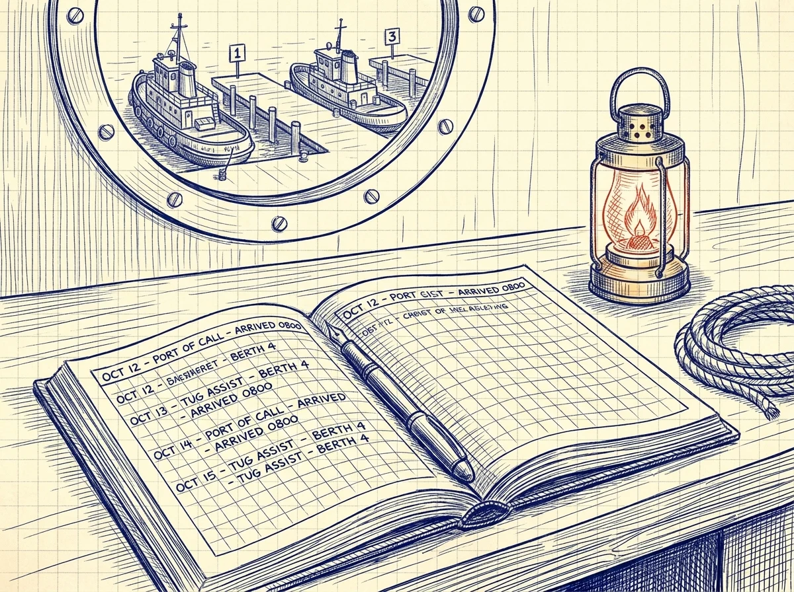
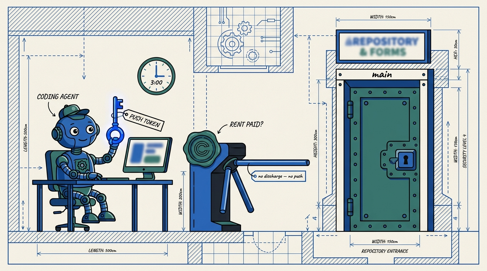
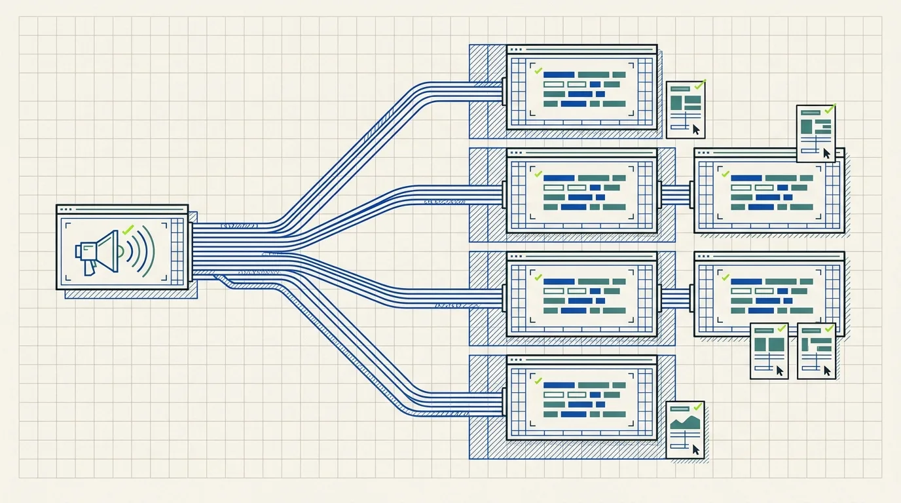
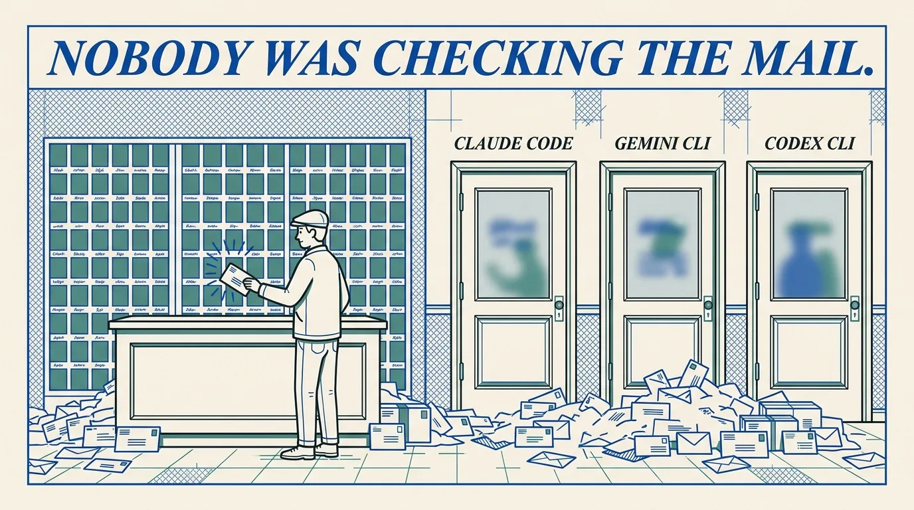
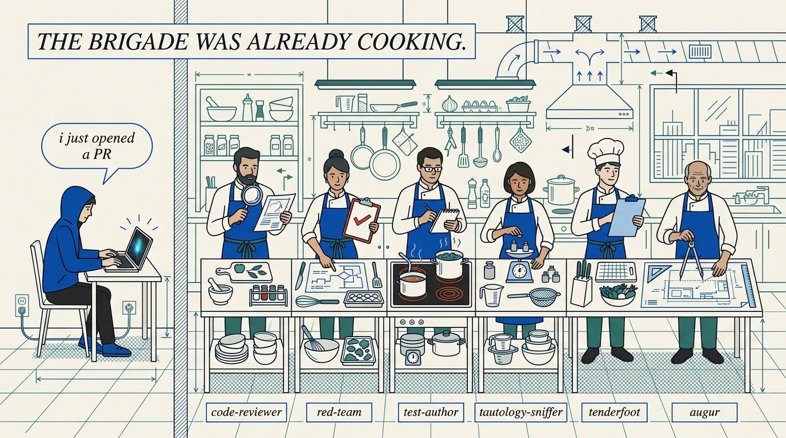
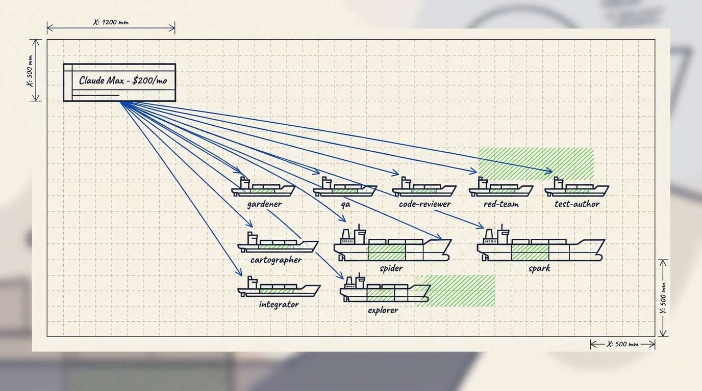
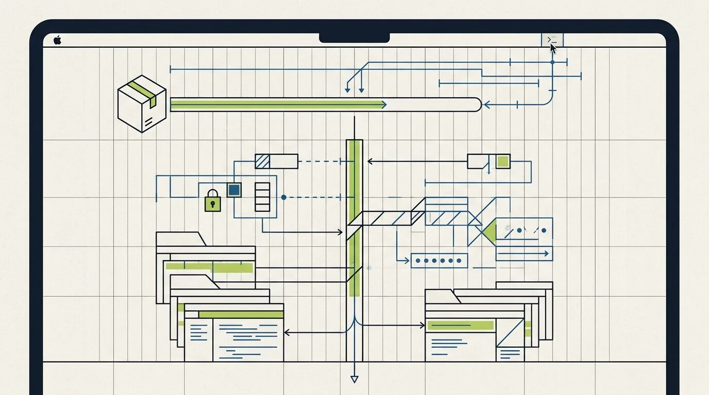
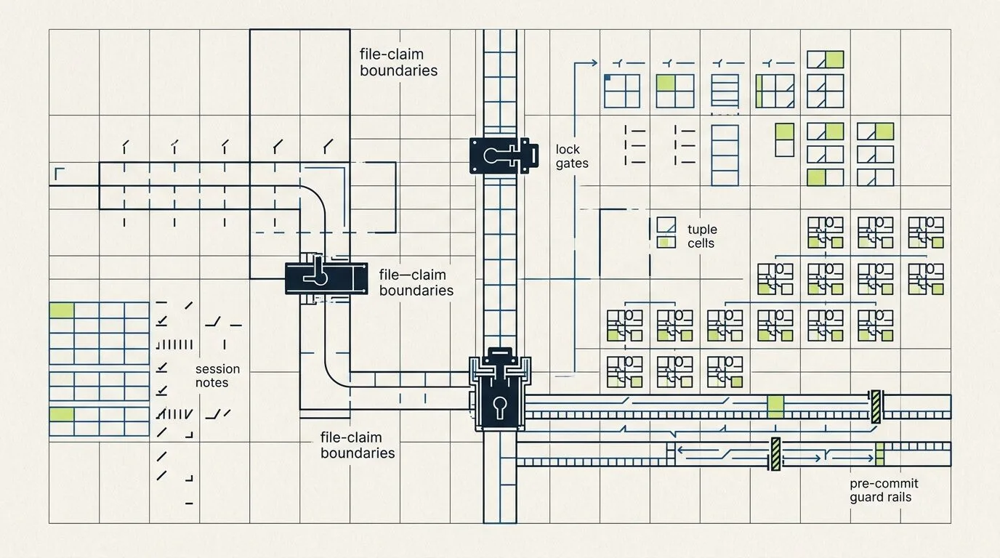

Harbor Blog
What broke while coordinating agents — and what we did about it. Short, honest write-ups from running a fleet, not announcements.

FleetBar and the Fleet Control Center show every running agent, which project it claimed, and where its work lives — before anyone presses go.
A launch checks the backend, the model rates, and the budget ceiling first. If something is off, it says no in plain English instead of starting anyway.
Session notes, file claims, and a record of stale work leave enough of a trail that a different agent can resume the thread.
PD Tube, guard checks, and a few small commands let ordinary tools talk to the agent running in your shell right now.

Your Coding Agent Has Your Push Token
You hand an agent your repo and it has the real push token — nothing structural stops it pinning main at 3am. A stern wrapper does not help; if the agent holds the capability, the restraint is advice. The fix is a macaroon: a credential the agent can narrow but never widen, whose push is gated on a daemon-issued discharge that only exists while coordination rent is paid. And we did not assert it was sound — ProVerif checked it, found the attack the request-binding stops, and proved the gate holds against an active attacker.
The rest of the log
One Send, Every Listener: pd tube Goes Multi-Subscriber
I built a two-pane demo of pd tube — a human and a live agent talking over one channel. It worked. Then I added a third listener and the bug fell out of the sky: whichever terminal polled first swallowed the message and the rest saw an empty channel. Here's the shared-cursor race, the per-listener-cursor fix, and the regression test that documents the old bug on purpose. Shipped in v3.16.2.

Attention Is The First Command
Port Daddy has had a perfectly good mailbox for about a year. Inboxes, channels, tuples, a coordination-inconsistency stream where the fleet airs its complaints. Nobody was checking the mail. Each agent turn is a fresh process; nothing inside the turn polls. This is the verb that fixes it, and the deliberate reason this is not an MCP tool.

The PR That Reviews Itself
You push at eleven at night. The CI gear-wheel is the only critic in the room. What if every PR you opened arrived with the adversarial review you would have asked for — six paid critics on the same git push you were already doing? The GitHub fleet, the bug it caught (14 green tests against a count that was structurally always 0), and what stays in your hands.

Your AI Subscription Already Powers A Fleet
I'm in Claude Code or Codex about ten hours a day. The subscription isn't idle — but a person can only hold one cursor at a time, and the other streams (worktrees, midnight agents, post-commit hooks) are free to share the same hourly budget. The killer experience isn't 'saves money.' It's waking up to a feature that wasn't there last night.

The CLI Is For The Robots
I edited an .env.local file today. Wrong one. Three directories away from the one the daemon actually reads. The fleet sat there 401'ing for an hour while I edited the wrong file and felt productive. That is a product failure, not a user error. The operator does not run pd commands; the operator gets buttons.

Why Coordination Guard Exists
Coordination Guard was not born from a clean theory of Git as policy. It was born because four agents — politely, professionally, with great commit messages — kept staging, resetting, and cherry-picking through each other's claims, and the Saturday I lost untangling that mess was the Saturday I stopped trusting honor systems.

Red and White Stay In Their Lanes
Two AI fleets argue about my whitepaper every month, and they are not allowed to talk to each other. One tries to break the paper; one tries to defend it. Here is the crypto that keeps them in their lanes, the three gates each round has to clear, and what shows up on the operator screen when somebody cheats.
Bond Pricing Is a Market, Not a Constant
Daily budgets are training wheels. They keep an agent from setting itself on fire, but they do not price what the fire would cost. The v2 paper points at the destination: cleanup as a lower bound, scope as a multiplier, reputation as a discount, and Thomas Youle's insurer-bidding market on top.
Evidence That Survives Multiple Machines
A note only your laptop can verify is half a record — and "trust me, it was on the other machine" is the worst sentence in incident response. The v2 Merkle forest, the KMS witness, and the mutable-signal ledger let a teammate or a CI runner verify the same evidence in 700 bytes, without your laptop in the room.
Passkey Identity Across Machines
Single-node was the right answer for one laptop and exactly one human. Then the laptops multiplied, the phone showed up, and the recovery story collapsed into prayer. The Federated Sovereign is what replaces it: passkeys at the front, an abstract KMS in the middle, mobile-as-viewer at the edge.
The Control Plane Is the Product
The agents do beautiful work and then quietly clobber each other's files, spend money on the wrong API key, and answer to a daemon that has been serving stale code for three days. The fix is not more agents; it is one inspectable surface where identity, ownership, runtime, backend, cost, and recovery all agree before anyone presses go.
Cold Start Without Surprise Launches
The first time you run a fleet should not also be the first time it tells you a credential is missing, the daemon is on the wrong checkout, or the planned spend is roughly your rent. Cold start is supposed to read the repo, list what is missing, simulate the run, and let the human decide whether the bill is worth it.
PD Tube Turns UI Events Into Agent Work
PD Tube is a phone line. The browser button, the failing test, the editor lightbulb, the inbound webhook — they all dial the same number, and the agent already sitting in your repo picks up. No SDK, no MCP server, no hosted callback. Just a local socket and a threaded reply.
Telemetry Is a Launch Gate
A launch button that does not know what the run will cost is a slot machine in a nice typeface. The fix is unromantic: refuse to launch unless the backend can name the exact tokens, the exact rates, and the exact nonzero cost it has already written down.
Keeping the Map Honest
The roadmap says one thing, the recovery doc says another, the session notes say a third, and the live daemon is somehow doing a fourth. The fix is not more documents. It is one surface that reconciles all four into a map an operator can read in twenty seconds.
Running Is Not the Same as Current
A daemon can be alive, reachable, answering on the right port, and still serving the version of itself you wrote three weeks ago. "Running" is a heartbeat. "Current" is a different question. Runtime provenance is what makes the second one answerable.
Backend Readiness Is Dependency Truth
"Ready" is not one bit; it is five, and they all have to line up. The credential exists. The package is installed. The CLI is logged in. The model is on the catalog. Telemetry will write a real number when the run finishes. Miss one, and the launch becomes a story you tell about why the bill arrived.
Retired threads
Old drafts, future-dated guesses, and off-brief pieces are out of the index. The old links still work — they redirect to the current honest version.